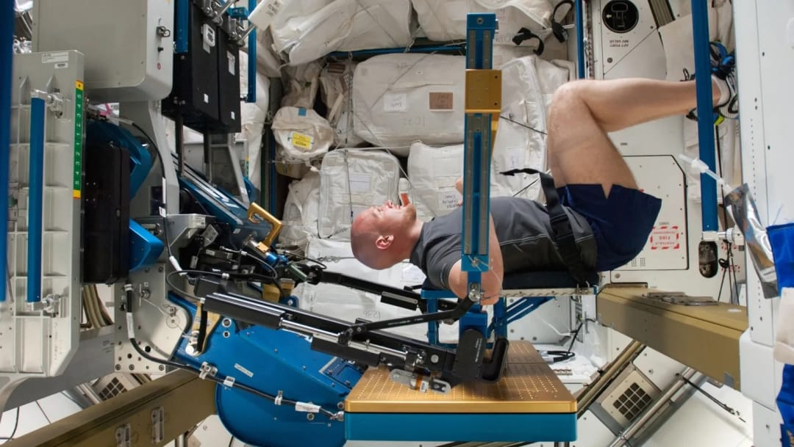
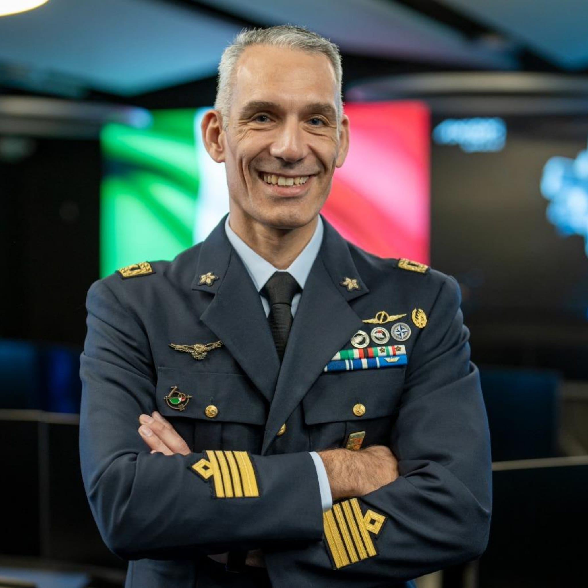
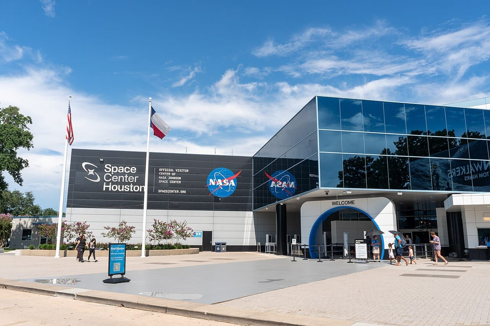
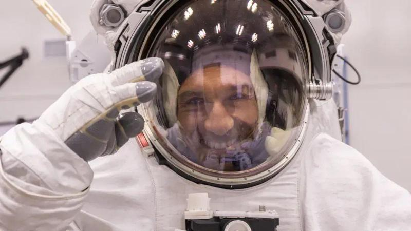

Eroi dello spazio
Oggi l’eroe del cielo non è più soltanto quello che vola più in alto o più veloce. Per anni l’immaginario dell’aeronautica e dello spazio è stato dominato dall’idea del primato: superare un limite, raggiungere una quota impossibile, tentare ciò che nessuno aveva mai fatto prima. È un’immagine che appartiene alla storia e che ancora oggi affascina, perché racconta l’uomo nel suo desiderio più naturale: andare oltre. Ma nel mondo aerospaziale moderno, la parola “eroe” ha assunto un significato diverso, più profondo e più realistico. Oggi l’impresa non è più un gesto isolato o improvvisato, ma il risultato di una costruzione lunga, precisa e controllata. Lo spazio e il volo moderno non sono più “territori romantici” in cui basta osare: sono ambienti estremi in cui ogni decisione deve essere calcolata, ogni procedura rispettata, ogni rischio gestito. Per questo l’eroe di oggi non è soltanto quello che affronta il pericolo, ma quello che lo affronta con disciplina. È chi unisce coraggio e preparazione, chi riesce a mantenere lucidità anche quando le condizioni diventano difficili, chi accetta la responsabilità di lavorare con sistemi complessi e delicatissimi. Nel settore aerospaziale contemporaneo, infatti, l’errore non è mai “solo un errore”: può significare la perdita di un veicolo, di una missione, o persino di vite umane. Ecco perché l’eroismo moderno non è più soltanto “sfida”, ma soprattutto controllo. Controllo emotivo, controllo tecnico, controllo operativo. È la mentalità tipica delle forze armate, dell’Aeronautica Militare e dei grandi programmi spaziali. In questo senso, parlare di eroi dello spazio oggi significa parlare di persone che non cercano il rischio, ma che imparano a gestirlo. Persone che sanno che la vera grandezza non è fare qualcosa di spettacolare, ma farlo in modo sicuro, preciso e responsabile.

Nuovi eroi
I nuovi eroi del cielo e dello spazio non si riconoscono solo nei momenti più spettacolari, quelli che finiscono in un video o in una fotografia: il lancio, il rientro, la missione compiuta. La parte più importante, quella che definisce davvero chi sono, avviene prima. Avviene nel lavoro invisibile. Oggi un astronauta, un pilota o un operatore aerospaziale non è semplicemente una persona “coraggiosa”. È una persona addestrata per gestire situazioni che la maggior parte degli esseri umani non vivrà mai. Il nuovo eroismo nasce dalla preparazione: studio continuo, simulazioni, addestramento ripetuto fino alla perfezione, capacità di ragionare sotto stress, rispetto assoluto delle procedure. Nel mondo moderno, l’aerospazio è diventato un settore in cui non basta essere bravi: bisogna essere costanti, metodici e affidabili. L’eroe non è chi improvvisa, ma chi riesce a mantenere lo stesso livello di precisione anche quando è stanco, sotto pressione o in condizioni estreme. Questo tipo di coraggio è diverso da quello classico. È un coraggio “silenzioso”. Non si vede in un gesto teatrale, ma in una scelta continua: restare lucidi, seguire i protocolli, proteggere la missione e il team. Per questo, oggi, gli eroi non sono soltanto quelli che “fanno cose incredibili”. Sono anche quelli che affrontano la normalità difficile del lavoro aerospaziale: l’allenamento ripetitivo, la fatica mentale, la pressione di dover essere perfetti. Perché nello spazio e nel volo moderno, essere perfetti non è un capriccio: è una necessità. I nuovi eroi sono anche persone capaci di lavorare in squadra. Oggi una missione non dipende mai da un singolo individuo. Dipende da un gruppo enorme di persone che devono essere sincronizzate, coordinate, unite da una fiducia totale. E la fiducia si costruisce solo con competenza e serietà.


Walter Villadei
In questo scenario si inserisce la figura di Walter Villadei, astronauta italiano che rappresenta perfettamente l’idea moderna di eroismo aerospaziale. Villadei è un esempio concreto di cosa significhi essere parte della nuova generazione dello spazio: non soltanto sognare l’orbita, ma lavorare in modo professionale, rigoroso e internazionale in uno dei contesti più avanzati al mondo. Il suo percorso racconta un’Italia che non si limita ad ammirare le imprese altrui, ma che partecipa e contribuisce. Il fatto che sia impegnato a Houston è molto significativo. Houston non è solo una città “famosa per lo spazio”: è uno dei centri più importanti per addestramento, ricerca e gestione delle missioni. È un luogo in cui la preparazione non è teorica, ma pratica, quotidiana, basata su standard altissimi. Essere astronauta oggi significa molto più che “andare nello spazio”. Significa saper affrontare un ambiente estremo con un approccio scientifico e operativo. Un astronauta moderno deve conoscere i sistemi di bordo, le procedure di emergenza, le dinamiche di lavoro in team, la gestione del tempo e della missione, la capacità di adattamento e la resistenza fisica e mentale. In più, deve essere in grado di collaborare con persone di nazionalità diverse, perché oggi lo spazio è soprattutto cooperazione. Basti pensare alla Stazione Spaziale Internazionale, che rappresenta una delle più grandi opere di collaborazione tra Paesi nella storia dell’umanità. Villadei, in questo senso, diventa una figura simbolica ma anche concreta: dimostra che l’Italia può essere presente e competitiva, e che l’eccellenza non nasce da un colpo di fortuna, ma da studio, sacrificio e preparazione. Il suo esempio è importante anche per i giovani: mostra che lo spazio non è solo un sogno lontano, ma un percorso reale, fatto di impegno e formazione. E soprattutto mostra che il coraggio, oggi, non è solo un gesto eroico, ma un modo di lavorare.


Il cuore nascosto del volo moderno
Dietro ogni missione aerospaziale moderna esiste una parte fondamentale che spesso non viene raccontata abbastanza: la missione non comincia quando si decolla. La missione comincia molto prima. Il volo moderno, sia aeronautico che spaziale, è un equilibrio delicatissimo tra uomo e tecnologia. E questo equilibrio non si regge sul caso: si regge su controlli, procedure, verifiche e simulazioni. Ogni elemento viene studiato, provato e riprovato. Oggi la tecnologia è avanzatissima: sensori, computer di bordo, sistemi automatici, intelligenza artificiale, telemetria continua. Ma tutto questo non rende il volo “più facile”: lo rende più complesso. Perché quando aumentano i sistemi, aumentano anche le cose che possono andare storte. Per questo il cuore nascosto del volo moderno è la preparazione. Ogni missione prevede test tecnici e collaudi, simulazioni di emergenza, controllo dei parametri di sicurezza, pianificazione dettagliata di ogni fase, analisi dei rischi e coordinamento tra equipaggio e centro operativo. La parte più affascinante è che molte delle difficoltà vengono affrontate prima ancora che accadano. Nel volo moderno si lavora per prevedere l’imprevisto. È un concetto che sembra paradossale, ma è ciò che rende possibile operare in condizioni estreme. Ecco perché oggi l’eroe non è solo quello che “resiste”, ma quello che è pronto. Pronto a gestire guasti, problemi tecnici, stress e decisioni rapide. Pronto a seguire protocolli anche quando l’istinto spingerebbe a fare altro. In questo modo nasce la vera forza del volo moderno: non la spettacolarità, ma l’affidabilità. La capacità di operare anche quando la situazione è difficile, senza perdere precisione.

Quando lo spazio diventa impegno, ricerca e futuro
Raccontare i nuovi eroi del cielo significa anche raccontare un messaggio più grande: lo spazio non è soltanto un sogno, ma una responsabilità. Oggi lo spazio è ricerca, cooperazione e futuro. Ogni missione spaziale ha un valore che va oltre l’impresa in sé. Le tecnologie sviluppate per lo spazio spesso ricadono sulla vita quotidiana: materiali più resistenti, sistemi di comunicazione, strumenti medici, osservazione ambientale, monitoraggio del clima. Lo spazio è diventato anche un settore strategico. I satelliti sono fondamentali per telecomunicazioni, navigazione, meteorologia e sicurezza. Senza lo spazio, molte delle tecnologie che usiamo ogni giorno smetterebbero di funzionare. Inoltre oggi lo spazio non è più un territorio di sfida ideologica come durante la Guerra Fredda. È un ambiente dove la cooperazione internazionale è necessaria, perché le missioni sono troppo complesse e costose per essere affrontate da un singolo Paese. Quando un astronauta italiano lavora in un centro come Houston, porta con sé non solo un ruolo tecnico, ma un messaggio di eccellenza. Porta l’idea che l’Italia può contribuire al futuro con competenze reali, con serietà, con professionalità. E soprattutto porta una cosa fondamentale: un modello. Un esempio di come il futuro non si costruisce con la fortuna, ma con studio, metodo e sacrificio.

Gli eroi silenziosi che sostengono ogni missione
Infine, parlare di eroi del cielo e dello spazio oggi significa riconoscere una verità fondamentale: gli eroi non sono soltanto quelli che partono. Ogni missione è possibile grazie a un numero enorme di persone che lavorano dietro le quinte. Persone che spesso non vengono nominate, ma senza le quali nessuna missione potrebbe esistere. Gli eroi silenziosi sono gli ingegneri aerospaziali, i tecnici di manutenzione, i progettisti, i medici e gli specialisti, gli addestratori e gli istruttori, i controllori di missione, gli analisti e i ricercatori, gli esperti di sicurezza, le squadre logistiche e operative. Ognuno di loro ha un compito essenziale. E in un sistema così complesso, ogni ruolo è importante: non esistono parti “secondarie”. Questa è la differenza più grande tra l’eroe del passato e quello di oggi. Un tempo l’eroe era spesso raccontato come un individuo solo, quasi leggendario. Oggi l’eroe è un elemento di una squadra. E proprio questo rende l’aerospazio moderno così affascinante: è una conquista collettiva. È il risultato di competenze che si uniscono, di persone che collaborano, di professionalità che lavorano insieme per un obiettivo comune. Ecco perché oggi gli eroi del cielo non sono soltanto quelli che vediamo nelle fotografie, ma anche quelli che, in silenzio, rendono possibile ogni missione.